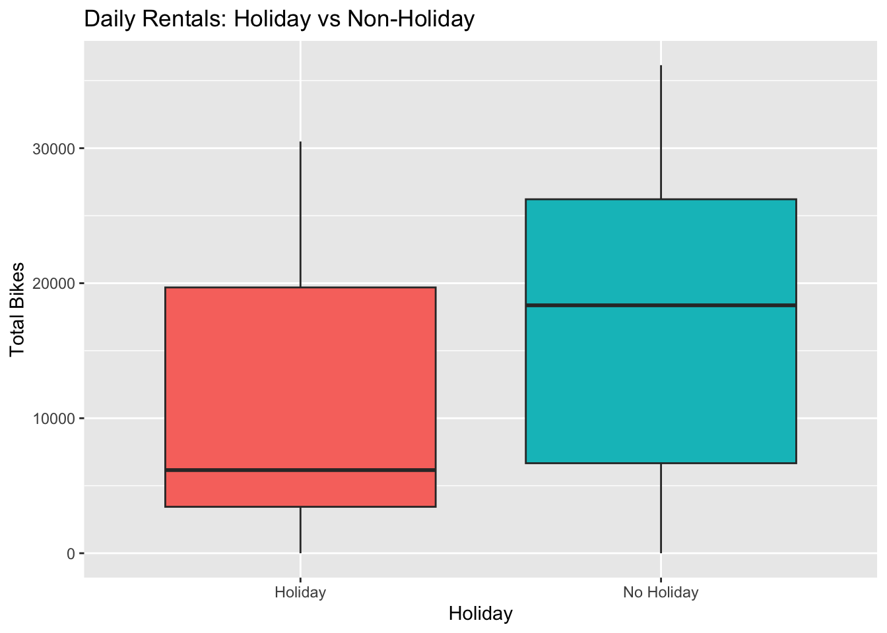
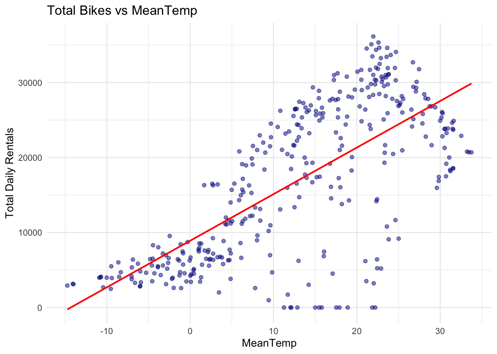
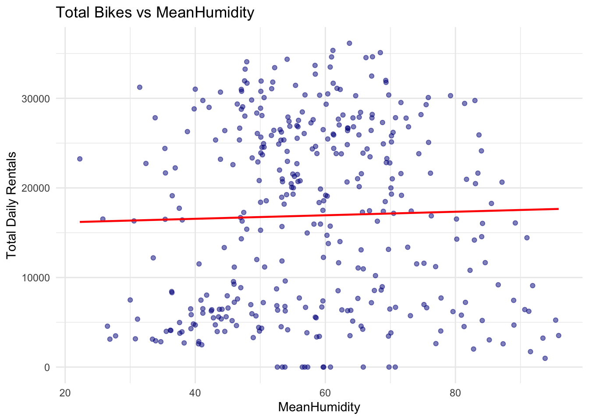
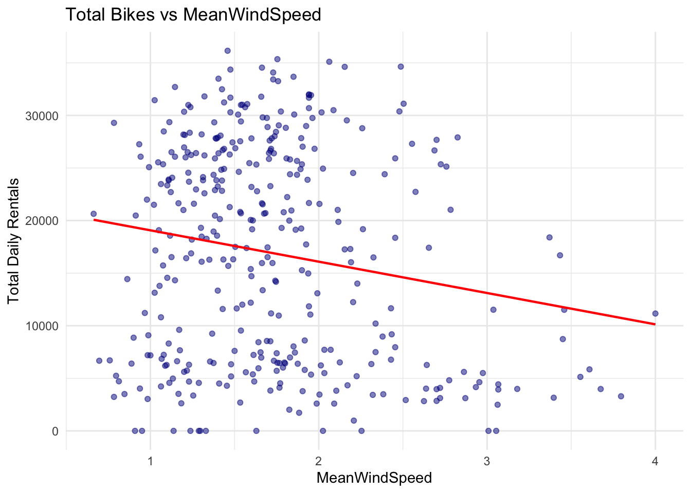
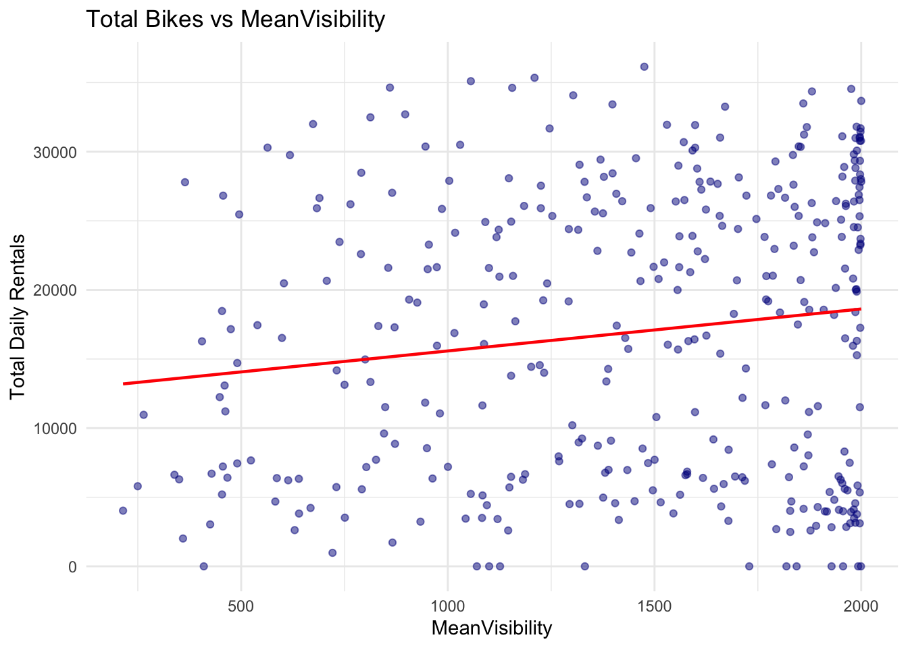

Rows: 8760 Columns: 14
── Column specification ────────────────────────────────────────────────────────
Delimiter: ","
chr (4): Date, Seasons, Holiday, Functioning Day
dbl (10): Rented Bike Count, Hour, Temperature(°C), Humidity(%), Wind speed ...
ℹ Use `spec()` to retrieve the full column specification for this data.
ℹ Specify the column types or set `show_col_types = FALSE` to quiet this message.
##EDA First we need to investigate the data and understand how it is stored.
Checking for missing values in the dataset.
colSums(is.na(bike_data))
Date Rented Bike Count Hour
0 0 0
Temperature(°C) Humidity(%) Wind speed (m/s)
0 0 0
Visibility (10m) Dew point temperature(°C) Solar Radiation (MJ/m2)
0 0 0
Rainfall(mm) Snowfall (cm) Seasons
0 0 0
Holiday Functioning Day
0 0
We can see from the output that there are no missing values in this data set.
Next we look at the column types and the values within the columns to make sure that they are consistent with what we would expect. Using str to show us how it is stored.
Change the way Seasons, Holiday and Functioning day are stored to be a factors with ordered levels and convert the date column to dmy using the lubridate package date column.
library(lubridate)
Attaching package: 'lubridate'
The following objects are masked from 'package:base':
date, intersect, setdiff, union
library(dplyr)
Attaching package: 'dplyr'
The following objects are masked from 'package:stats':
filter, lag
The following objects are masked from 'package:base':
intersect, setdiff, setequal, union
── Conflicts ────────────────────────────────────────── tidyverse_conflicts() ──
✖ dplyr::filter() masks stats::filter()
✖ dplyr::lag() masks stats::lag()
ℹ Use the conflicted package (<http://conflicted.r-lib.org/>) to force all conflicts to become errors
# A tibble: 2 × 3
FunctioningDay mean_rent median_rent
<chr> <dbl> <dbl>
1 No 0 0
2 Yes 729. 542
After looking at the summaries accross the data here the FunctioningDay data is always yes and never no so it provides no useful information for analysis so the decision here is to drop that column.
bike_data <- bike_data |>select(-FunctioningDay)
Summarizing across the hours so that each day has one observation associated with it.
library(ggplot2)#Temperature vs Rentalsggplot(bike_daily, aes(x = MeanTemp, y = TotalBikes, color = Seasons)) +geom_point(alpha =0.5) +geom_smooth(se =FALSE) +labs(title ="Temperature vs Total Bikes Rented", x ="Mean Daily Temp (°C)", y ="Total Bikes Rented")
`geom_smooth()` using method = 'loess' and formula = 'y ~ x'
# Boxplots of rentals by Season and Holiday#Seasonggplot(bike_daily, aes(x = Seasons, y = TotalBikes, fill = Seasons)) +geom_boxplot(outlier.alpha =0.3) +labs(title ="Distribution of Daily Rentals by Season", x ="Season", y ="Total Bikes Rented") +theme(legend.position ="none")
#Holidayggplot(bike_daily, aes(x = Holiday, y = TotalBikes, fill = Holiday)) +geom_boxplot(outlier.alpha =0.3) +labs(title ="Daily Rentals: Holiday vs Non-Holiday", x ="Holiday", y ="Total Bikes") +theme(legend.position ="none")

Seeing if there are any correlations between the numeric variables
num_vars <-c("MeanTemp", "MeanHumidity", "MeanWindSpeed","TotalRainfall", "TotalSnowfall", "MeanVisibility")for (v in num_vars) { p <-ggplot(bike_daily, aes_string(x = v, y ="TotalBikes")) +geom_point(alpha =0.5, color ="darkblue") +geom_smooth(method ="lm", se =FALSE, color ="red", linewidth =0.8) +labs(title =paste("Total Bikes vs", v),x = v, y ="Total Daily Rentals") +theme_minimal()print(p)}
Warning: `aes_string()` was deprecated in ggplot2 3.0.0.
ℹ Please use tidy evaluation idioms with `aes()`.
ℹ See also `vignette("ggplot2-in-packages")` for more information.
`geom_smooth()` using formula = 'y ~ x'

`geom_smooth()` using formula = 'y ~ x'

`geom_smooth()` using formula = 'y ~ x'

`geom_smooth()` using formula = 'y ~ x'
`geom_smooth()` using formula = 'y ~ x'
`geom_smooth()` using formula = 'y ~ x'

Slitting the Data
Splitting the data using tidymodels split and stratifying based on seasons. Using a 25/75 split.
library(tidymodels)library(dplyr)#1st Recipierec_mlr_1 <-recipe(TotalBikes ~ ., data = bike_train) |># 1) Derive day-of-week from Date, then build weekday/weekend factorstep_date(Date, features ="dow", label =TRUE) |># creates Date_dow as ordered factor (Mon,...,Sun)step_mutate(day_type =factor(if_else(Date_dow %in%c("Sat","Sun"),"Weekend", "Weekday"))) |>step_rm(Date_dow) |># drop intermediateupdate_role(Date, new_role ="ID") |># keep Date only as an ID (ignored by model)# 2) Standardize numeric predictors (scales differ)step_normalize(all_numeric_predictors()) |># 3) Dummy-code categorical predictors (Seasons, Holiday, day_type)step_dummy(all_nominal_predictors(), one_hot =TRUE)
library(tidymodels)library(dplyr)# Recipe 2rec_mlr_2 <-recipe(TotalBikes ~ ., data = bike_train) |># 1) Use Date to create weekday/weekend, then keep Date as an IDstep_date(Date, features ="dow", label =TRUE) |># creates Date_dowstep_mutate(day_type =factor(if_else(Date_dow %in%c("Sat","Sun"),"Weekend", "Weekday"))) |>step_rm(Date_dow) |>update_role(Date, new_role ="ID") |># exclude from modeling# 2) Dummy-code categorical predictors (Seasons, Holiday, day_type)step_dummy(all_nominal_predictors(), one_hot =TRUE) |># 3) Add interactions:# - Seasons × Holiday (all season dummies with all holiday dummies)# - Seasons × MeanTemp (each season dummy with temperature)# - MeanTemp × TotalRainfallstep_interact(terms =~starts_with("Seasons_"):starts_with("Holiday_")+starts_with("Seasons_"):MeanTemp+ MeanTemp:TotalRainfall) |># 4) Standardize all numeric predictors (after creating interaction columns)step_normalize(all_numeric_predictors())
library(tidymodels)library(dplyr)# Identify the ORIGINAL numeric predictors num_base <- bike_train |>select(where(is.numeric), -TotalBikes) |>names()# Recipe 3rec_mlr_3 <-recipe(TotalBikes ~ ., data = bike_train) |># 1) Derive weekday/weekend from Date; keep Date only as an IDstep_date(Date, features ="dow", label =TRUE) |>step_mutate(day_type =factor(if_else(Date_dow %in%c("Sat","Sun"),"Weekend", "Weekday"))) |>step_rm(Date_dow) %>%update_role(Date, new_role ="ID") |># 2) Dummy-code categorical predictors first (so we can form interactions with dummies)step_dummy(all_nominal_predictors(), one_hot =TRUE) |># 3) Interactions (same as Recipe 2)step_interact(terms =~starts_with("Seasons_"):starts_with("Holiday_")+starts_with("Seasons_"):MeanTemp+ MeanTemp:TotalRainfall) |># 4) Quadratic terms step_poly(all_of(num_base), degree =2, options =list(raw =TRUE)) |># 5) Standardize all numeric predictors (includes the squared terms)step_normalize(all_numeric_predictors())
library(tidymodels)library(dplyr)# Model speclm_spec <-linear_reg() |>set_engine("lm")#Workflows for the three recipes wf1 <-workflow() %>%add_model(lm_spec) %>%add_recipe(rec_mlr_1)wf2 <-workflow() %>%add_model(lm_spec) %>%add_recipe(rec_mlr_2)wf3 <-workflow() %>%add_model(lm_spec) %>%add_recipe(rec_mlr_3)wfs <-list(rec1 = wf1,rec2 = wf2,rec3 = wf3)# 10-fold CV on training set for each recipe set.seed(123)ctrl <-control_resamples(save_pred =TRUE)cv_results <- purrr::imap_dfr( wfs,~fit_resamples(.x, resamples = bike_folds, control = ctrl) |>collect_metrics() |>mutate(model = .y))
→ A | warning: prediction from rank-deficient fit; consider predict(., rankdeficient="NA")
There were issues with some computations A: x1
There were issues with some computations A: x10
→ A | warning: prediction from rank-deficient fit; consider predict(., rankdeficient="NA")
There were issues with some computations A: x4
→ B | warning: ! The following column has zero variance so scaling cannot be used:
Seasons_Spring_x_Holiday_Holiday.
ℹ Consider using ?step_zv (`?recipes::step_zv()`) to remove those columns
before normalizing.
There were issues with some computations A: x4
There were issues with some computations A: x10 B: x2
Warning: Using `all_of()` outside of a selecting function was deprecated in tidyselect
1.2.0.
ℹ See details at
<https://tidyselect.r-lib.org/reference/faq-selection-context.html>
→ A | warning: prediction from rank-deficient fit; consider predict(., rankdeficient="NA")
→ B | warning: ! The following column has zero variance so scaling cannot be used:
Seasons_Spring_x_Holiday_Holiday.
ℹ Consider using ?step_zv (`?recipes::step_zv()`) to remove those columns
before normalizing.
There were issues with some computations A: x9 B: x2
There were issues with some computations A: x10 B: x2
# View CV metrics (RMSE lower is better; also R^2 shown)cv_results |>arrange(.metric, mean)
# A tibble: 6 × 7
.metric .estimator mean n std_err .config model
<chr> <chr> <dbl> <int> <dbl> <chr> <chr>
1 rmse standard 5017. 10 348. pre0_mod0_post0 rec2
2 rmse standard 5054. 10 365. pre0_mod0_post0 rec3
3 rmse standard 5581. 10 227. pre0_mod0_post0 rec1
4 rsq standard 0.703 10 0.0241 pre0_mod0_post0 rec1
5 rsq standard 0.747 10 0.0385 pre0_mod0_post0 rec3
6 rsq standard 0.750 10 0.0379 pre0_mod0_post0 rec2
# Select best by RMSE best_name <- cv_results |>filter(.metric =="rmse") |>arrange(mean) |>slice(1) |>pull(model)best_wf <- wfs[[best_name]]best_name
[1] "rec2"
# Fit best model on entire training and evaluate on testset.seed(123)final_res <-last_fit(best_wf, split = bike_split)
→ A | warning: prediction from rank-deficient fit; consider predict(., rankdeficient="NA")